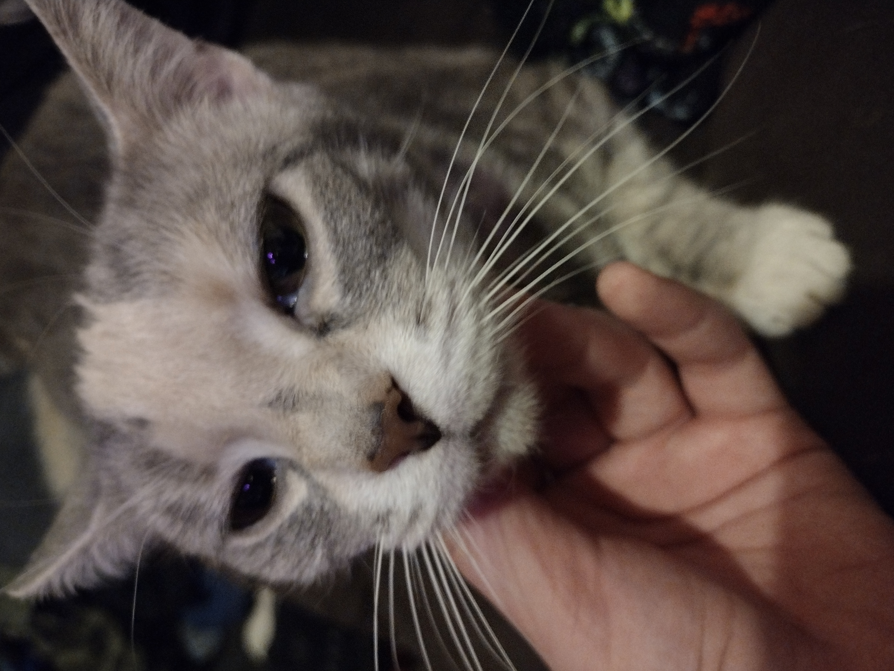

Hi welcome to ZeldaTheCat!
This is Zelda 🐱
She is still young and a pretty fat cat! She enjoys biting my legs and destroying the toilet paper, and LOVES catnip and lasers.
She is really fat tho, she has a belly pouch that swings when she walks.
At night she makes random sounds because
she wants a boyfriend.
- LJ (Love to Dakota)